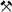
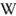

Grube Schauinsland
Touristische Informationen:
| Ort: |
Schauinslandstraße 390, 79254 Oberried.
Schauinsland, vom Gipfelparkplatz Schauinsland (Bergstation Schauinslandbahn) 5 min Fußmarsch. (47.9095901, 7.8985309) |
| Öffnungszeiten: |
Kleine Führung:
Ostern bis OKT Mi, Sa, So, Fei 11:30, 12:30, 13:30, 14:30, 15:30. In den Sommerferien stündliche Führungen. Mittlere Führung: Ostern bis OKT Mi, Sa, So 11, 14. Große Führung:: Ostern bis OCT Mi, Sa, So 11, 14. [2026] |
| Eintrittspreise: |
Kleine Führung:
Erwachsene EUR 4, Kinder (4-12) EUR 3, Familie EUR 14. Mittlere Führung: Erwachsene EUR 16. Große Führung: Erwachsene EUR 24. [2026] |
| Typ: |
 Blei Zink Silber |
| Licht: |
 Elektrisches Licht Elektrisches Licht
|
| Dimension: | L=100.000 m (geschätzt), 21 Sohlen zwischen 458 m N.N. und 1280 m N.N., T=10 °C. |
| Führungen: |
Kleine Führung: D=45 min. Mittlere Führung: D=90 min, MinAge=12. Große Führung: D=150 min, MinAge=12. |
| Fotografieren: | |
| Zugänglichkeit: | |
| Literatur: |
Wolfgang Werner, Hans Joachim Franzke, Günther Wirsing et al (2002):
Die Erzlagerstätte Schauinsland bei Freiburg im Breisgau
Ber. Naturf. Ges. Freiburg i. Br. , 92, Heft 1, Freiburg 2002.
pdf
Ch. Lindenbecky, G. Wirsing (1996): Hydrogeologische Untersuchungsergebnisse und 3D-Visualisierung des Grubengebäudes Schauinsland, Arbeitshefte Geologie, 1, 60-65, 1996, Hannover. online |
| Adresse: |
Forschergruppe Steiber, Oberlinden 16, 79098 Freiburg, Tel: +49-761-26468.
E-mail: |
| Nach unserem Wissen sind die Angaben für das in eckigen Klammern angegebene Jahr korrekt. Allerdings können sich Öffnungszeiten und Preise schnell ändern, ohne daß wir benachrichtigt werden. Bitte prüfen Sie bei Bedarf die aktuellen Werte beim Betreiber, zum Beispiel auf der offiziellen Website in der Linkliste. |
|
Geschichte
| 12-13 Jahrhundert | Baubeginn. |
| 1954 | Stilllegung. |
| 1971 | Nutzung für die Trinkwassergewinnung. |
Geologie
Wie üblich im Schwarzwald war auch das Revier um den Schauinsland auf das Auftreten von hydrothermalen Erzgängen basiert. Auf einem Gebiet von etwa 1 km² treten 14 Blei-Zink-Erzgänge auf. Von der Länge her waren die Gänge jedoch für den Schwarzwald recht kurz. Doch durch die Häufung der Gänge war dies die größte Blei-Zink-Lagerstätte Süddeutschlands. Die Anzahl der vorkommenden Mineralien und Erze in diesen polymetallischen Gänge ist sehr groß, es waren wohl um die 110.
Bemerkungen
Der Schauinsland (1286 m NN) wird auf älteren Karten als "Erzkasten" bezeichnet. Er ist ein beliebtes Ausflugsziel mit Sicht über Schwarzwald, Rheinebene, Vogesen, und bei gutem Wetter sogar bis in die Alpen. Und natürlich ist er im Winter bei Skifahrern und anderen Wintersportlern sehr beliebt. Die Grube Schauinsland war das größte Silberbergwerk des Schwarzwaldes und der Vogesen. Auf 22 Sohlen wurde abgebaut, in 800 Jahren Bergbau wurden insgesamt etwa 100 km Stollen angelegt.
Obwohl am Schauinsland Blei-Zink-Erz abgebaut wurde, war ein viel selteneres Metall für den Bergbau mindestens genauso wichtig. In geringen Mengen kommt hier nämlich im Bleiglanz auch Silber vor. So war das Silber für das Adelsgeschlecht der Zähringer eine wichtige Einnahmequelle und führte wohl auch dazu, dass sie 1120 die Stadt Freiburg in der Nähe gründeten. Die Gewinne finanzierten unter anderem den Bau des Freiburger Münsters. Nach einer längeren Zeit mit anhaltenden Erträgen nahm der Bergbau aber im 16. Jahrhundert ab und endete mit dem 30-jährigen Krieg.
Das Museums-Bergwerk Schauinsland ist trotz seiner Lage auf dem Berg sehr gut zu erreichen, eine Art Passstraße führt über den Gipfel und ist auch im Winter geräumt. Das Schaubergwerk hat reguläre Öffnungszeiten von Ostern bis Anfang November in denen drei verschiedene Führungen zu festen Zeiten angeboten werden. Die kurze Führung ist für alle geeignet, die Längeren beinhalten einen Leiternabstieg und stellen deshalb gewisse Ansprüche and die körperlichen Fähigkeiten und haben außerdem ein Mindestalter von 12. Die Leitern sind solide, schrägstehend, und haben eine Länge von 2 bis 6 m. Zudem werden ganzjährig Sonderführungen nach Vereinbarung für Gruppen gemacht, was außergewöhnlich ist. Offensichtlich ist das Bergwerk kein Fledermausquartier. Bei den Sonderführungen können weitere Variationen zum Inhalt und zur Dauer gemacht werden. Zudem gibtes Märchenführungen, Krimi Wanderungen, Musik im Bergwerk, und Weinproben im Stollen.
- Siehe auch
 Auf Duck Duck Go nach "Grube Schauinsland" suchen...
Auf Duck Duck Go nach "Grube Schauinsland" suchen... Google Earth Placemark
Google Earth Placemark OpenStreetMap
OpenStreetMap
Grube Schauinsland - Wikipedia (visited: 10-MAR-2026) Museums-Bergwerk Schauinsland, offizielle Website (besucht: 21-FEB-2026)
Museums-Bergwerk Schauinsland, offizielle Website (besucht: 21-FEB-2026)- Schauinsland (besucht: 21-FEB-2026)
- Schauinsland Bergbaugeschichte (visited: 10-MAR-2026)
 Index
Index Themen
Themen Hierarchisch
Hierarchisch Länder
Länder Karten
Karten